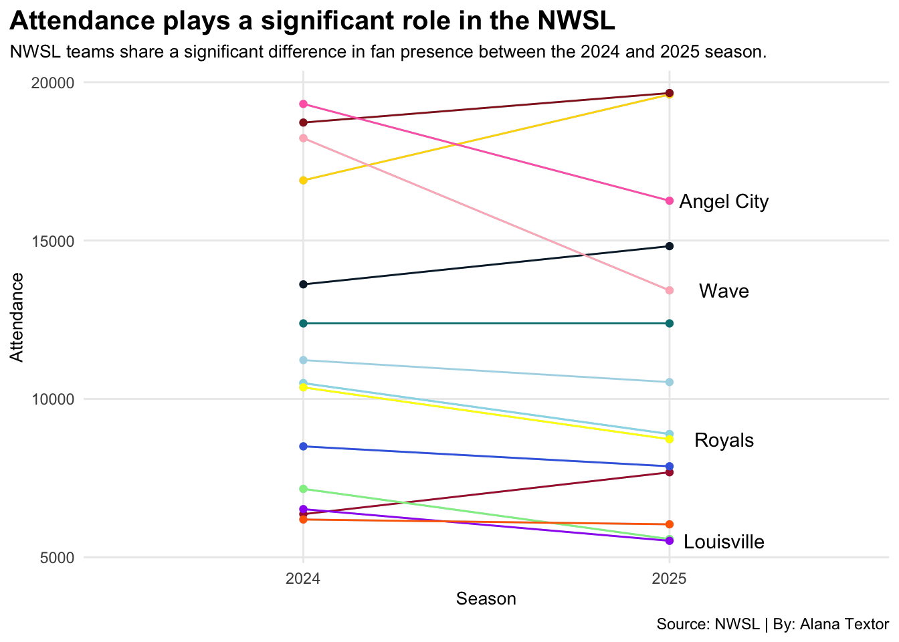

Code
library(tidyverse)
library(ggrepel)
library(patchwork)
library(ggalt)
nwsltwentyfour <- read_csv("2024 NWSL Stats - Sheet1.csv") |> mutate(season = 2024)
nwsltwentyfive <- read_csv("2025 NWSL Stats - Sheet1.csv") |> mutate(season = 2025)
nwsl <- bind_rows (nwsltwentyfour, nwsltwentyfive)
Pride <- nwsl |> filter(Squad == "Orlando Pride")
Washington <- nwsl |> filter(Squad == "Spirit")
Gotham <- nwsl |> filter(Squad == "Gotham FC")
KC <- nwsl |> filter(Squad == "Current")
NC <- nwsl |> filter(Squad == "Courage")
Portland <- nwsl |> filter(Squad == "Thorns")
Bay <- nwsl |> filter(Squad == "Bay FC")
Chicago <- nwsl |> filter(Squad == "Red Stars")
Racing <- nwsl |> filter(Squad == "Louisville")
SD <- nwsl |> filter(Squad == "Wave")
UR <- nwsl |> filter(Squad == "Royals")
LA <- nwsl |> filter(Squad == "Angel City")
OL <- nwsl |> filter(Squad == "Reign")
Houston <- nwsl |> filter(Squad == "Dash")
labellist <- c("Angel City", "Wave", "Louisville", "Royals")
labels <- nwsl |> filter(Squad %in% labellist)
ggplot() +
geom_line(data=nwsl, aes(x=season, y=Attendance, group=Squad), color="lightblue") +
geom_point(data=nwsl, aes(x=season, y=Attendance, group=Squad), color="lightblue") +
geom_line(data=Pride, aes(x=season, y=Attendance, group=Squad), color="#633492") +
geom_point(data=Pride, aes(x=season, y=Attendance, group=Squad), color="#633492") +
geom_line(data=Washington, aes(x=season, y=Attendance, group=Squad), color="gold") +
geom_point(data=Washington, aes(x=season, y=Attendance, group=Squad), color="gold") +
geom_line(data=Gotham, aes(x=season, y=Attendance, group=Squad), color="#9ADBE8") +
geom_point(data=Gotham, aes(x=season, y=Attendance, group=Squad), color="#9ADBE8") +
geom_line(data=KC, aes(x=season, y=Attendance, group=Squad), color="#008080") +
geom_point(data=KC, aes(x=season, y=Attendance, group=Squad), color="#008080") +
geom_line(data=NC, aes(x=season, y=Attendance, group=Squad), color="#AB1D37") +
geom_point(data=NC, aes(x=season, y=Attendance, group=Squad), color="#AB1D37") +
geom_line(data=Portland, aes(x=season, y=Attendance, group=Squad), color="#971E1F") +
geom_point(data=Portland, aes(x=season, y=Attendance, group=Squad), color="#971E1F") +
geom_line(data=Bay, aes(x=season, y=Attendance, group=Squad), color="#0C2032") +
geom_point(data=Bay, aes(x=season, y=Attendance, group=Squad), color="#0C2032") +
geom_line(data=Chicago, aes(x=season, y=Attendance, group=Squad), color="lightgreen") +
geom_point(data=Chicago, aes(x=season, y=Attendance, group=Squad), color="lightgreen") +
geom_line(data=Racing, aes(x=season, y=Attendance, group=Squad), color="purple") +
geom_point(data=Racing, aes(x=season, y=Attendance, group=Squad), color="purple") +
geom_line(data=SD, aes(x=season, y=Attendance, group=Squad), color="lightpink") +
geom_point(data=SD, aes(x=season, y=Attendance, group=Squad), color="lightpink") +
geom_line(data=UR, aes(x=season, y=Attendance, group=Squad), color="yellow") +
geom_point(data=UR, aes(x=season, y=Attendance, group=Squad), color="yellow") +
geom_line(data=LA, aes(x=season, y=Attendance, group=Squad), color="hotpink") +
geom_point(data=LA, aes(x=season, y=Attendance, group=Squad), color="hotpink") +
geom_line(data=OL, aes(x=season, y=Attendance, group=Squad), color="royalblue") +
geom_point(data=OL, aes(x=season, y=Attendance, group=Squad), color="royalblue") +
geom_line(data=Houston, aes(x=season, y=Attendance, group=Squad), color="#FF6900") +
geom_point(data=Houston, aes(x=season, y=Attendance, group=Squad), color="#FF6900") +
geom_text(data=labels |> filter(season == max(season)), aes(x=season + .15, y=Attendance, group=Squad, label=Squad)) +
scale_x_continuous(breaks=c(2024, 2025), limits=c(2023.5,2025.5)) +
labs(
x="Season",
y="Attendance",
title="Attendance plays a significant role in the NWSL",
subtitle="NWSL teams share a significant difference in fan presence between the 2024 and 2025 season.",
caption="Source: NWSL | By: Alana Textor"
) +
theme_minimal() +
theme(
plot.title = element_text(size = 15, face = "bold"),
axis.title = element_text(size = 10),
plot.subtitle = element_text(size=10),
panel.grid.minor = element_blank(),
plot.title.position = "plot"
) 